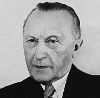

Konrad Adenauer (1876–1967), II. Dünya Savaşı’ndan sonra Batı Almanya’nın ilk sanşölyesi olmuştur. On dört yıl görev yapmış ve Alman ekonomisinin yeniden inşasındaki katkılarından dolayı takdir toplamıştır. Yahudi Soykırımı’nın dehşetinden sonra ülkesinin imajının uluslararası camiada tamir edilmesinde önemli rol oynamıştır.

Adenauer aynı zamanda ülkesini savaşın travmalarından bir an önce kurtarabilmek için yaptığı kimi faaliyetler nedeniyle eleştirilere de konu olmuştur. Kimi Nazi liderlerinin ceza almadan kurtulmasını sağladığı ve Alman halkının Nazi savaş suçları ile tamamen yüzleşmesini engellediği ileri sürülmüştür.
Adenauer Köln’de doğmuştu. 1917 yılında şehrin belediye başkanı oldu. 1933 yılında görevden alındı ve kamu binalarına Nazi bayrağı çekmeyi reddettiği için yeraltında yaşamak zorunda bırakıldı. İki kez tutuklandı ve senelerce kaçmak zorunda kaldı.
Savaştan sonra ABD ordusu Adenauer’i yeniden Köln belediye başkanı yaptı. Naziler’le ilişki kurmamış birkaç siyasetçiden biri olarak Hıristiyan Demokrat Birliği adında yeni bir partinin kurulmasına yardımcı oldu. 1946 yılında partinin lideri oldu. Ülkenin Doğu ve Batı Almanya olarak bölünmesinin ardından yapılan ilk seçimleri Hıristiyan Demokratlar kazandı. Adenauer yetmiş üç yaşında Batı Almanya’nın sanşölyesi oldu.
Adenauer ülkesinin NATO safında yer almasını sağlamış, Yahudi Soykırımı nedeniyle İsrail’e tazminat ödeme kararı almış ve Alman Ordusu’nu yeniden kurmuştur. Aynı zamanda SSCB ile son Alman savaş esirlerinin bırakılması için görüşmeler yürütmüştür.
Adenauer’ın son derece tartışmalı olan bir icraatı da eski Nazilerin itibarını iade etmesi ve onları üst düzey görevlere getirmesi olmuştur. 1958 yılına gelindiğinde neredeyse bütün Nazi savaş suçluları affedilmiş ve cezaevinden çıkarılmıştı.
1963 yılında istifa eden Adenauer dört yıl sonra ölmüştür. Son yıllarında, yetişen yeni Alman nesillerinin gözünde muhafazakarlığın simgesi olarak görülmeye başlanmıştı. Onun ardından ülkenin savaş suçları ile daha ciddi bir şekilde hesaplaşması gerektiği gündeme gelmiştir.
Ek Bilgiler
1- Adenauer, Harry S. Truman’a (1884–1972) hayrandı. 1964 yılında bir gazeteciye onun anılarını sürekli elinin altında bulundurduğunu söylemiştir.
2- Time “Hunların ve Nazilerin nefret edilen toprağına yeniden saygınlık kazandırdığı için” 1953 yılında onu yılın adamı seçti.
3- Adenauer 1944 yılında Gestapo tarafından tutuklandı. Hitler’e yapılan başarısız suikastin şüphelilerinden biriydi. Komplo ile ilişkisine dair hiçbir delil bulunamadı. Birkaç ay sonra serbest bırakıldı.